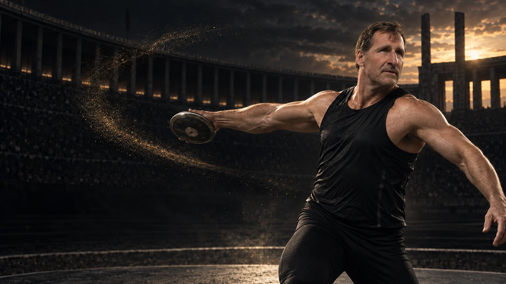
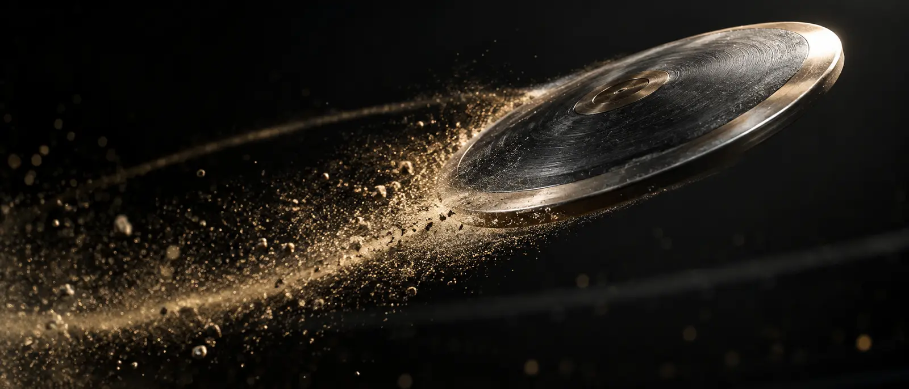
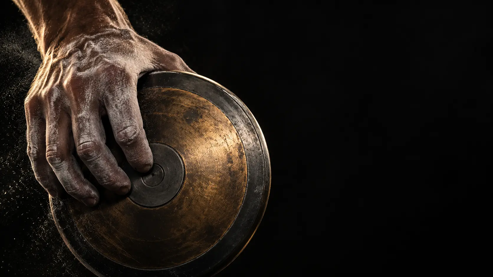
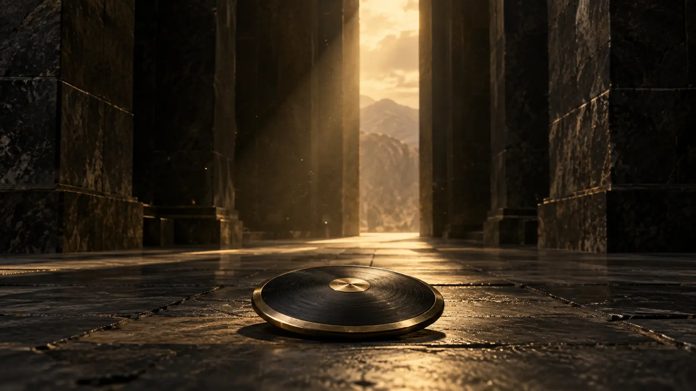
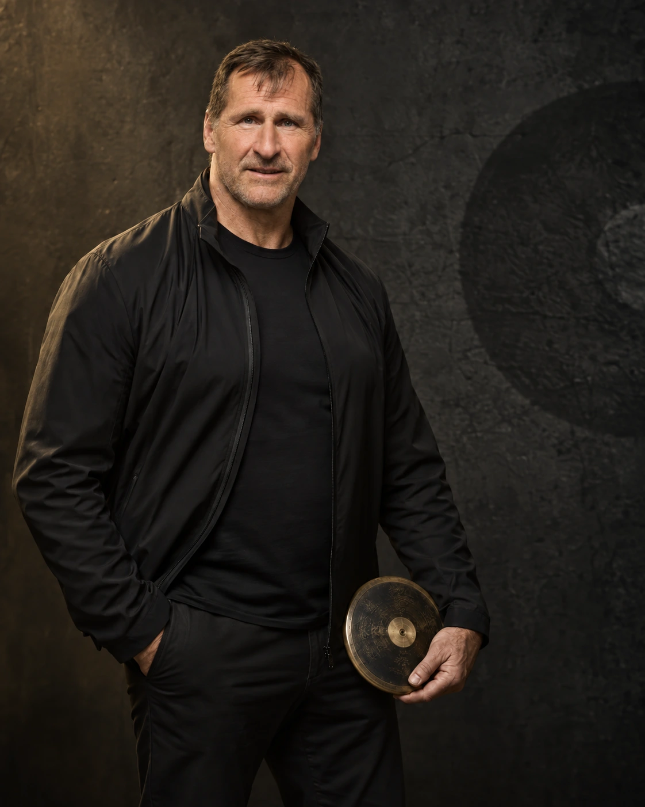
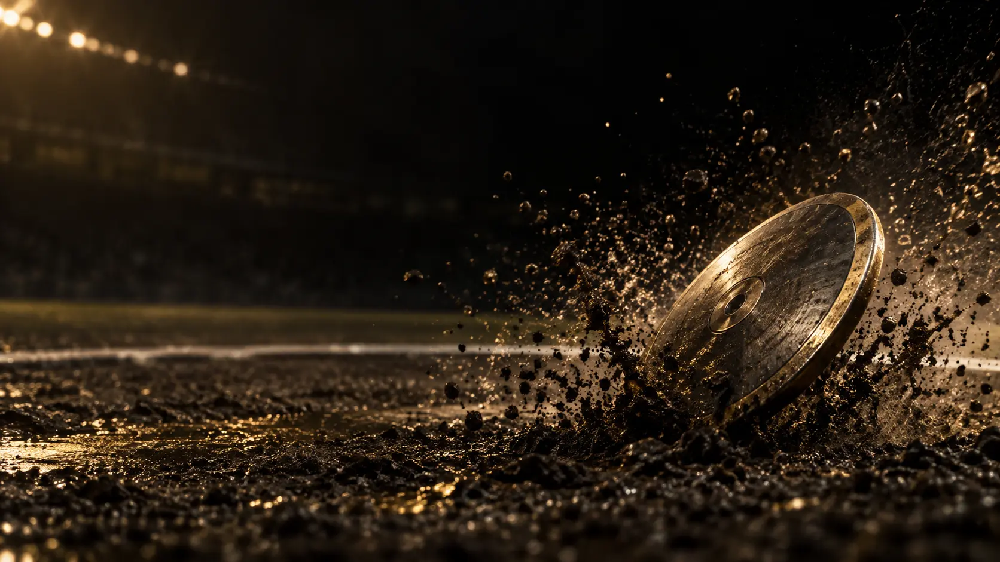

Dialog
Business-Talk
Moderiertes Gespräch mit Raum für Fragen, persönliche Begegnungen, Fotos und Autogramme.

Olympiasieger · 5× Weltmeister · Speaker
Was im Ring über Sieg und Niederlage entscheidet, bewegt auch Unternehmen: Fokus. Haltung. Der nächste Versuch.
01 / IMPULS
Sie entsteht, wenn Talent auf Disziplin trifft – und wenn man nach Rückschlägen wieder in den Ring steigt.
Lars Riedel überträgt die Erfahrungen einer außergewöhnlichen Karriere auf die Herausforderungen von Führung, Vertrieb und Zusammenarbeit. Persönlich, glaubwürdig und ohne Motivationsfloskeln.
02 / FORMATE
Live vor Ort oder digital. Vom fokussierten Impuls bis zum mehrtägigen Teamerlebnis.
Signature Keynote · 30–45 Minuten
Wie Ziele tragen, was Sieger immer wieder neu motiviert und warum der nächste Versuch oft der entscheidende ist.
Dialog
Moderiertes Gespräch mit Raum für Fragen, persönliche Begegnungen, Fotos und Autogramme.
Gemeinsam aktiv
Teambildende Aktivprogramme, Speerwerfen für Einsteiger und exklusive Stadionerlebnisse.
Theorie + Praxis
Von drei Stunden bis mehrtägig – mit Vortrag, Gruppenarbeit, Feedback, Bewegung und Wettkampf.
Besondere Momente
Olympiastadt, Leichtathletik-Highlights, Gewinnerreisen und individuell kuratierte Rahmenprogramme.
Reichweite + Persönlichkeit
Authentische Markenpartnerschaften, TV-Expertise, Panels, Moderationen und Produktpräsentationen.
03 / DER MOMENT
ZWEI UNGÜLTIGE VERSUCHE.
Atlanta, 31. Juli 1996: Erst im dritten Versuch setzt Lars Riedel eine gültige Weite. Im fünften folgt der olympische Rekord – und Gold. Ein Moment, der zeigt, wie man unter maximalem Druck bei sich bleibt.

DER WURF / DIE ENTSCHEIDUNG
71,50 Meter sind das sichtbare Ergebnis. Entscheidend sind die Wiederholungen, die niemand sieht.
04 / BILANZ
Über ein Jahrzehnt Weltspitze – mit Titeln in Tokio, Stuttgart, Göteborg, Atlanta, Athen, Budapest und Edmonton.
Atlanta · 1996
69,40 m · Olympischer Rekord
1991 · 1993 · 1995
1997 · 2001
Sydney · 2000
68,50 m
Budapest · 1998
67,07 m



05 / DER MENSCH
Nach dem Ende der DDR verlor Lars seinen Trainer, arbeitete auf dem Bau und trainierte kaum. Was folgte, war kein gerader Weg – sondern ein Comeback.
Mit Trainer Karlheinz Steinmetz fand er in Mainz zurück in den Leistungssport. 1991 wurde er erstmals Weltmeister. Diese Erfahrung prägt seine Auftritte bis heute: Erfolg beginnt nicht beim Ergebnis, sondern bei der Entscheidung, wieder anzutreten.
Lars für Ihr Team erleben ↗06 / MEDIA & BUCH
TV-Experte, Buchautor und Persönlichkeit mit Haltung.
Unter anderem bei „Let’s Dance“, „Ewige Helden“, „Ninja Warrior Germany – Promi-Special“ und „Gefragt – Gejagt XXL“ sowie als TV-Experte.
Die Autobiografie von Lars Riedel und Edwin Klein über Siege, Rückschläge und den Weg an die Weltspitze.
Buch ansehen ↗Für Kongresse, Sales-Konferenzen, Messen, Galas, Jubiläen, Gesundheitstage und Charity-Veranstaltungen.
07 / PASSEND FÜR
08 / DETAILS
Live in der Regel 30 bis 45 Minuten, anschließend sind Fragen, Fotos, Autogramme und persönliche Gespräche möglich. Digitale Talks dauern meist 15 bis 30 Minuten plus Fragen.
Die buchbaren Vorträge und Business-Talks werden auf Deutsch angeboten.
Ja. Anlass, Publikum, Unternehmensziel und gewünschtes Format werden vorab abgestimmt. So entsteht ein passender Impuls statt eines austauschbaren Standardvortrags.
Für Präsentationen werden geeignete Bild- und Videotechnik sowie – je nach Format – Headset oder Handmikrofon benötigt. Die Details werden mit der Veranstaltungsplanung abgestimmt.

09 / ANFRAGE
Erzählen Sie uns kurz von Ihrem Event. Das Management meldet sich persönlich mit Verfügbarkeit und einem passenden Vorschlag.